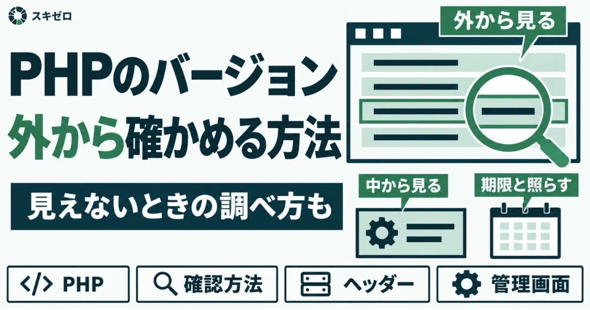
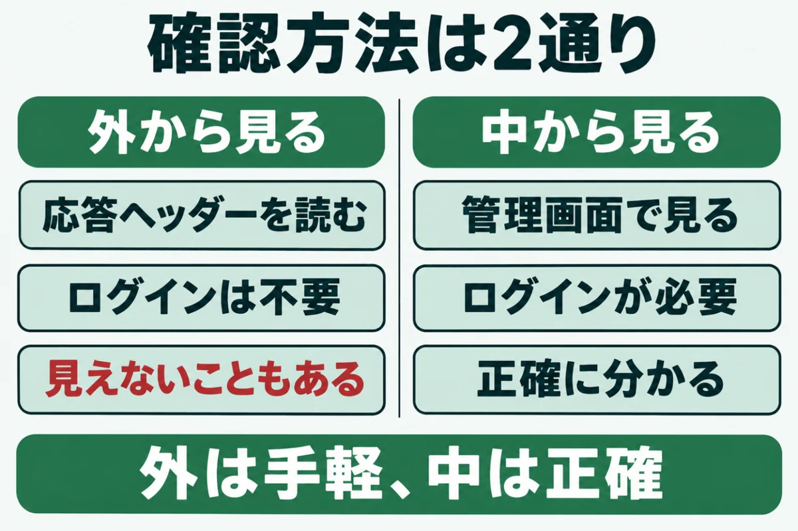
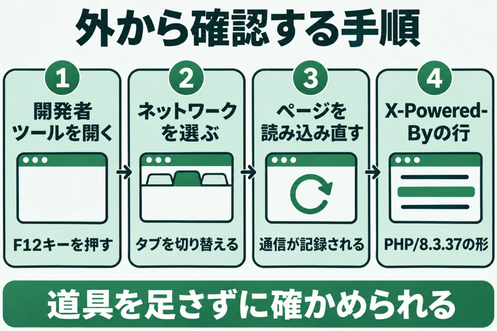
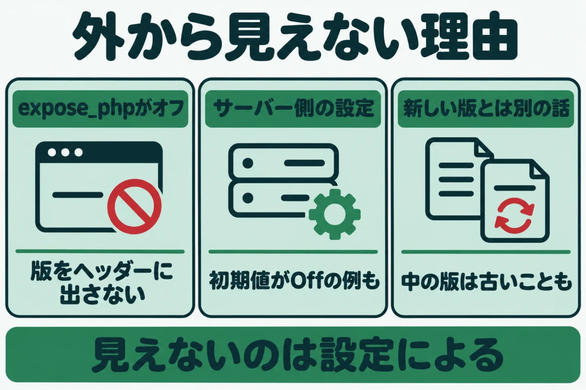
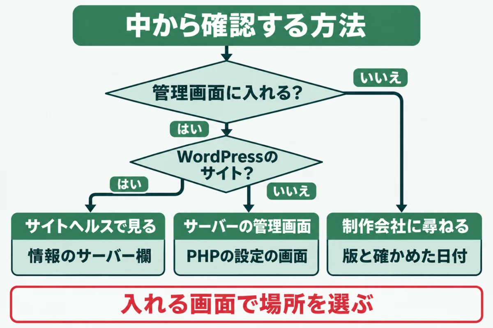
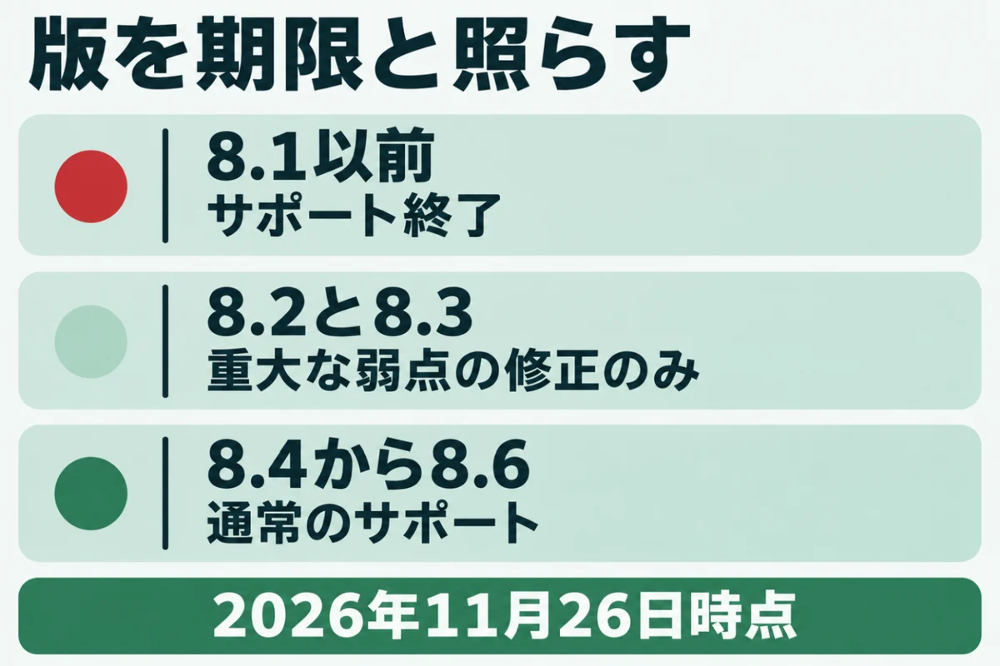

PHPのバージョンの確認方法サイトの外から確かめる手順と、見えないときの調べ方

「うちのサイトのPHPは、どのバージョンで動いているのだろう？」と気になっていませんか？
サーバー会社のお知らせで古いPHPの話を見ても、自社の版が分からないと動けません。確かめる方法は、サイトの外から見る方法と、管理画面の中から見る方法の2通りです。
この記事では、外からの確かめ方と、見えないときの調べ方を順にまとめました。確かめたあとに、サポートの期限と照らす見方も紹介します。
内容は、PHPの公式サイトとWordPress、サーバー会社のマニュアルで確かめました。パソコンのブラウザを開いて、読み進めてください。
PHPのバージョンの確認方法は「外から」と「中から」の2通り

PHPのバージョンの確認方法は、外から見る方法と中から見る方法の2通りです。外からは手軽に試せますが、版が見えないこともあります。
WordPressの公式の説明では、PHPはWordPressを構成する言語の1つです。サーバーの中で動くので、ふだんの画面に版は出てきません。2つの方法の違いを先に知ると、自分に合うほうを選べるでしょう。
外から見るのは、サーバーが応答に添える情報
外からの確認は、サーバーが返す応答を見る方法です。ブラウザでページを開くと、サーバーは本文と一緒に「応答ヘッダー」という情報を返します。この中の「X-Powered-By」という行に、PHPの版が書かれていることがあるのです。MDNはこのヘッダーを、応答を作ったアプリケーションを示す標準外の項目と説明しています。管理画面に入らずに見られるので、制作会社に任せたサイトでも試せるでしょう。ただし、出さない設定のサイトでは何も分かりません。
中から見るのは、管理画面に出る今の設定
中からの確認は、管理画面に表示される今の設定を見る方法です。WordPressなら、「サイトヘルス」という画面に版が出ます。国内の主なレンタルサーバーの管理画面でも、今の版を確かめられるでしょう。どちらもログインできる人だけが見られる正確な情報です。外から見えないサイトでも、中からなら版が分かります。管理画面に入れる方は、中からの確認を先に済ませてください。入れない方は、外から分かる範囲を見てから制作会社に尋ねましょう。
PHPのバージョンを外から確認する方法：開発者ツールと外部の診断

PHPのバージョンを外から確認する方法は、ブラウザの開発者ツールと外部の診断の2つです。どちらも、管理画面のログイン情報を使いません。
開発者ツールは、Chromeに初めから入っている道具です。何も足さずに、その場で数分あれば確かめられます。応答ヘッダーを読むのが手間な方は、外部の診断を使うと早いでしょう。
開発者ツールで応答ヘッダーを開く
パソコンのChromeで、確かめたいページを開きます。WindowsではF12キーを押すと、開発者ツールが開く仕組みです。Macでは、CommandとOptionを押しながらIを押してください。次に「ネットワーク（Network）」のタブを選びます。開発者ツールは、開いている間の通信だけを記録する道具です。そのため、タブを選んだあとにページを読み込み直しましょう。一覧からページ本体の行を選ぶと、「ヘッダー（Headers）」のタブが開きます。
X-Powered-Byの行を読む
開いたタブの「レスポンスヘッダー（Response Headers）」が、応答ヘッダーの欄です。その中の「X-Powered-By」の行を探してください。「X-Powered-By: PHP/8.3.37」のように書かれていれば、それが今の版です。PHPの公式マニュアルによると、この表示を出す設定は既定で有効になっています。数字は、前の2つ（8.3）が系列を表す仕組みです。同じ欄で見られる守りの設定は、セキュリティヘッダーとは？ホームページに入れたい6つの設定｜確かめ方と入れるときの注意で扱いました。
外部の診断で確かめる
応答ヘッダーを自分で読むのが難しければ、外部の診断に任せられます。スキゼロの無料簡易診断は、URLを入れるだけで8項目を判定する仕組みです。判定は、AからEで示されます。PHPに当たるのは、「修正が止まった土台のプログラム」という項目です。この診断は、外から見える公開情報だけを読んで判定します。管理画面やファイルの中までは見ません。そのため、外に版を出していないサイトでは、中からの確認と組み合わせてください。
PHPのバージョンが外からの確認方法で見えないときの理由

PHPのバージョンが外からの確認方法で見えないのは、多くの場合版を出さない設定になっているからです。X-Powered-Byの行がなくても、故障ではありません。
運営者の自社サイト2つを外から試したときも、どちらも版を表示しない設定でした。出さない設定には、自分で切る場合とサーバー側で切ってある場合があります。理由が分かれば、次は中から確かめればよいと判断できるでしょう。
expose_phpをオフにしている
1つ目は、PHPの設定「expose_php」をオフにしている場合です。PHPの公式マニュアルは、この設定の働きを次のように説明しています。PHPがサーバーに入っていることを外に知らせ、版もHTTPヘッダーに含めるという内容です。既定値は、有効を表す「1」になっています。オフにすると、攻撃者が使える情報を減らせるという説明です。変更できる場所は「php.iniのみ」とされています。共用サーバーでは、利用者が自由に変えられないこともあるでしょう。
サーバー会社が初めから出さない設定にしている
2つ目は、サーバー会社の側で出さない設定になっている場合です。たとえばエックスサーバーには、「Xアクセラレータ Ver.2」という高速化の機能があります。マニュアルによると、利用中は一部の設定にサーバーの初期値が適用される決まりです。その一覧にexpose_phpがあり、初期値は「Off」と書かれています。この機能を使っている間は、版が出ない状態になるわけです。ほかのサーバー会社の初期値は、公式マニュアルでは確かめられませんでした。契約先に尋ねるか、開発者ツールで見てください。
見えないことと、新しい版であることは別
版が外から見えないこと自体は、悪いことではありません。OWASPは、X-Powered-Byのヘッダーをすべて取り除くよう勧めています。攻撃する側が、弱点を見つけやすくなるからです。ただし、見えないことと新しい版であることは別だと考えてください。PHPの公式マニュアルも、隠す手段は守りとしては弱いと書いています。隠していても、中の版が古ければ弱点は残ったままでしょう。見えなかったときは、次の章の方法で中から確かめてください。
PHPのバージョンを中から確認する方法：WordPressとサーバーの管理画面

PHPのバージョンを中から確認する方法は、WordPressとサーバーの管理画面の2つです。外から見えなかったサイトでも、この方法なら版が分かります。
WordPressで作ったサイトなら、サイトヘルスの画面が手軽でしょう。WordPress以外のサイトや、ドメインごとに見たいときはサーバーの管理画面を使います。どちらにも入れないときの頼み方も、あわせて見ていきましょう。
WordPressのサイトヘルスで見る
WordPressの管理画面にログインし、「ツール」から「サイトヘルス」を開きます。「情報」のタブを選び、「サーバー」の欄を開いてください。下へ進むと、PHPバージョンの行が見つかります。WordPressの公式の案内にある手順なので、迷わず進められるでしょう。この画面は情報を表示するだけで、設定を変える場所ではありません。同じタブには、WordPress本体の版も載っているのです。本体の版は、WordPressのバージョンを確認する方法（管理画面と外からの両方）で扱いました。
サーバーの管理画面で見る
サーバーの管理画面にも、今のPHPの版が出る画面があります。国内の4社の画面の名前を、公式マニュアルで確かめて表にしました。2026年11月26日時点の内容です。エックスサーバーやロリポップでは、版がドメインごとに設定されています。ドメインが複数あるなら、1つずつ確かめてください。この画面は版を切り替える場所でもあります。見るだけのときは、何も保存せずに閉じましょう。切り替えの手順は、エックスサーバーでPHPのバージョンを上げる手順と事前チェックにまとめました。
| サーバー | 開く画面 | 版が出る場所 |
|---|---|---|
| エックスサーバー | サーバーパネルの「PHP Ver.切替」 | ドメインを選んだ先の「現在のバージョン」 |
| ConoHa WING | 「サイト管理」→「サイト設定」→「応用設定」→「PHP設定」 | 「PHPバージョン」の欄 |
| ロリポップ | ユーザー専用ページの「サーバーの管理・設定」→「PHP設定」 | ドメイン別のPHPバージョン |
| さくらのレンタルサーバ | サーバーコントロールパネルの「スクリプト設定」→「言語バージョン設定」 | 今選ばれているPHPのバージョン |
- 参考：PHPのバージョンについて｜エックスサーバー
- 参考：PHPの設定をする｜ConoHa WINGサポート
- 参考：PHP設定｜ロリポップ！レンタルサーバー
- 参考：PHPのバージョンを変更したい｜さくらのサポート情報
管理画面に入れないときは制作会社に尋ねる
ログイン情報が手元にないときは、制作会社や保守の担当者に尋ねてください。聞くことは、今のPHPのバージョンと確かめた日付の2つで足ります。ドメインが複数あるなら、ドメインごとに答えてもらいましょう。返事は、画面の写しと一緒にもらうと記録に残せます。尋ねた結果、誰も管理画面に入れないと分かることもあるでしょう。その場合は、サーバーの契約者が誰かを確かめるところから始めてください。版を知ることは、サイトを誰が管理しているかを知る入口にもなります。
PHPのバージョンの確認方法のあとに見る期限と、確かめるときの注意

PHPのバージョンの確認方法が分かったら、出てきた版をサポートの期限と照らします。版の数字だけでは、急ぐべきかどうかを判断できないからです。
運営者は2026年10月に、自社のサイト15個を点検しました。そのうち7つが、サポートの終わったPHPのままだったのです。確かめる作業そのものにも、気をつけたい点があります。期限の見方と合わせて、順に見ていきましょう。
出てきた版をサポート期限の表と照らす
出てきた版は、系列ごとに決まった期限と見比べてください。公式サイトによると、公開から2年間は不具合と弱点の両方が直されます。続く2年間は、重大な弱点だけを必要に応じて直す期間です。合わせて4年を過ぎた系列には修正が出ず、早めの移行が勧められています。2026年11月26日時点の期限を、公式サイトの表から抜き出しました。8.2は、2026年12月31日が期限です。期限の意味と更新の進め方は、PHPのサポート終了とは？放置の危険と確認・更新の手順｜8.2は2026年末で終了にまとめています。
| 系列 | セキュリティ修正の期限 | 2026年11月26日時点の状態 |
|---|---|---|
| 8.1以前 | 終了（8.1は2025年12月31日まで） | サポート終了 |
| 8.2 | 2026年12月31日 | 重大な弱点の修正のみ |
| 8.3 | 2027年12月31日 | 重大な弱点の修正のみ |
| 8.4 | 2028年12月31日 | 通常のサポート（2026年12月31日まで） |
| 8.5 | 2029年12月31日 | 通常のサポート（2027年12月31日まで） |
| 8.6 | 2030年12月31日 | 通常のサポート（2028年12月31日まで） |
phpinfoのファイルを置いたままにしない
版を調べる方法として、phpinfoを書いたファイルを置く手順が紹介されることがあります。PHPの公式マニュアルによると、phpinfoはPHPの状態を大量に出力する関数です。版のほか、サーバーの情報やOSの版、パス、設定の値まで含まれます。ファイルの場所を知っていれば、誰でもこの一覧を開けてしまうのです。使った場合は、確かめ終えたらファイルをすぐに消してください。IPAも、不要なファイルは削除するよう呼びかけています。版を知るだけなら、サイトヘルスやサーバーの管理画面で足りるでしょう。
調べる相手は自分の会社のサイトにする
外からの確認は、どのサイトに対しても技術的にはできてしまいます。けれども、調べる相手は自分の会社が管理しているサイトに限りましょう。他社のサイトを何度も調べると、相手のサーバーに負担をかけます。取引先のサイトが気になるときは、担当者に伝えて本人に確かめてもらってください。自社のサイトでも、短い時間に何十回も読み込み直す必要はありません。応答ヘッダーは、1回の読み込みで確かめられます。スキゼロの結果票の受付も、同じドメインでは1日5回までです。
URLを入れるだけで、PHPを含む8項目を無料で判定します。読むのは外から見える公開情報だけで、管理画面やファイルの中は見ません。
無料で診断するPHPのバージョンの確認方法に関するよくある質問
X-Powered-Byの行が見当たりません。PHPを使っていないのでしょうか？
そうとは限りません。版を出さない設定のサイトでは、PHPで動いていてもこの行が出ないからです。PHPの設定「expose_php」は、既定では有効になっています。これをオフにしているサイトや、サーバー会社が初めからオフにしている例があるのです。WordPressはPHPで作られているので、WordPressのサイトならPHPで動いています。管理画面のサイトヘルスか、サーバーの管理画面で版を確かめてください。
外からバージョンが見えていたら、すぐに隠すべきですか？
隠すより先に、その版がサポートの期限内かを確かめてください。期限が切れた版なら、新しい版へ上げる計画を立てるのが先です。表示を消しても、古い版の弱点そのものは残ります。OWASPも、攻撃する側には技術を見分ける別の手段があるとしました。版を新しくしたうえで表示も消すと、手がかりを減らせるでしょう。表示の消し方はサーバーによって違うので、契約先の案内に従ってください。
PHPのバージョンは、どのくらいの頻度で確かめればよいですか？
少なくとも年に1回は確かめましょう。2026年11月時点で修正が続いている系列の期限は、どれも12月31日です。秋のうちに確かめておけば、年末までに切り替えの準備を進められます。サーバー会社からPHPのお知らせが届いたときも、確かめる合図になるでしょう。担当者が替わるときは、確かめた版と日付を引き継いでください。ドメインが複数ある会社では、一覧にしておくと見落としを減らせます。
確かめたバージョンが古かったら、次に何をすればよいですか？
慌てて切り替える前に、準備を済ませてください。バックアップを取り、テーマとプラグインが新しい版に対応しているかを確かめます。WordPressを使っているなら、推奨はPHP 8.3以上です。切り替えはサーバーの管理画面で行いますが、手順はサーバー会社ごとに違います。戻せるかどうかも、作業の前に公式マニュアルで見ておきましょう。自信がないときは、制作会社や専門家に相談してください。
WordPress以外で作ったサイトでも、同じ方法で確かめられますか？
外からの確認とサーバーの管理画面は、WordPress以外のサイトでも使えます。X-Powered-Byの表示は、WordPressではなくPHPの設定によるものだからです。サイトヘルスはWordPressの画面なので、ほかの仕組みのサイトにはありません。その場合は、サーバーの管理画面で今の版を見てください。制作会社が独自に作ったシステムなら、対応している版を作った会社に尋ねましょう。
まとめ
PHPのバージョンは、外からと中からの2通りで確かめられます。外からは応答ヘッダーのX-Powered-Byを見ますが、出さない設定のサイトでは見えません。見えないこと自体は、悪いことではないのです。
その場合は、サイトヘルスかサーバーの管理画面で確かめましょう。出てきた版は、サポートの期限と照らしてください。期限が近い版や切れた版なら、準備をしてから切り替えを進めます。
まずは、今の状態を知るところから。
URLを入れるだけで、数十秒で判定が出ます。登録はいりません。